Life sheet · great-uncle (his mother's father's brother)
Barto Country
Born about 1926 to 1927Documented (range)
1940 census, age 13 (index text); census day 1 April 1940 gives a birth from 2 Apr 1926 to 1 Apr 1927
Died 30 Nov 1999Documented
Birmingham News, Wed 1 Dec 1999 p27 ("passed away Tuesday, November 30, 1999").
- 1940Cardiff, Election Precinct 18, in his parents' household
- Aug 1949Ft. Benning, Ga. (the reserve division's camp)
- 1950Birmingham-Southern College, Birmingham
- laterCardiff
- burialCardiff Cemetery (1999 obituary)
Son of Charlie Country and Julia Tombrello (1940 household in the census index; the 1966 obituary names "Bart" among the sons; Joe's account). That "Barto" (1949 to 1999) and "Bart" (1966, 2008) are one man is Plausible
- Brothers and sisters
- Joseph "Jobo" Country 11 Mar 1922 to 23 May 2008Rosemary Country Nail about 1923Angeline (Angie) Country Walker about 1930Claude S. Country about 1932 to before 1999
As written in the records: Barto (1940 census (index text); 1949 to 1999 newspapers) · Cpls. Barto Country (Birmingham Post 19 Aug 1949) · Country, Barto (name lists 1950 to 1990) · Bart (1966 obituary of his father; 2008 obituary of his brother) · MR. BARTO (1999 obituary)
Dates and ages
- 1940 census (census day 1 April)1940 census, Election Precinct 18 (index text)Documented (index)about, between13 years, 0 months, 0 daysand13 years, 11 months, 30 daysAge as recorded: 13
- "Cpls. Barto Country," 87th Infantry Division (Reserve), camp at Ft. Benning (19 Aug 1949)Birmingham Post 19 Aug 1949 p20, "Infantry Reservists Off To Camp"Documented (as printed)about, between22 years, 4 months, 18 daysand23 years, 4 months, 17 days
- Name list: Barto, Chas. and Joseph, Precinct 18 (11 Apr 1950)Birmingham Post 11 Apr 1950 p33 (list title not on the page)Documented (as printed)about, between23 years, 0 months, 10 daysand24 years, 0 months, 9 days
- Named a current member of the Hilltop Chapter of Kappa Pi, Birmingham-Southern (23 May 1950)Birmingham News 23 May 1950 p7, "Deft In Art, Eight Tapped For Kappa Pi"Strongly supportedabout, between23 years, 1 month, 22 daysand24 years, 1 month, 21 days
- Name list: Barto, Chas. and Joseph, Precinct 18 (15 Apr 1952)Birmingham Post-Herald 15 Apr 1952 p45 (list title not on the page)Documented (as printed)about, between25 years, 0 months, 14 daysand26 years, 0 months, 13 days
- Name list: Barto, Chas., Joseph and Martha B., Precinct 38 (13 Apr 1954)Birmingham Post-Herald 13 Apr 1954 p75 (list title not on the page)Documented (as printed)about, between27 years, 0 months, 12 daysand28 years, 0 months, 11 days
- Named "Bart Country" among his father's sons (11 Apr 1966)Birmingham News 11 Apr 1966 p28Plausible (name)about, between39 years, 0 months, 10 daysand40 years, 0 months, 9 days
- Name list with Claude S, Frances C, Joseph, Martha B and Robert K (11 Aug 1978)Birmingham Post-Herald 11 Aug 1978 p93 (list title not on the page)Documented (as printed)about, between51 years, 4 months, 10 daysand52 years, 4 months, 9 days
- Name list, Leg. Prec. 51, Area 9, Brookside City Hall (11 May 1990)Birmingham Post-Herald 11 May 1990 p122Documented (as printed)about, between63 years, 1 month, 10 daysand64 years, 1 month, 9 days
- Dies (30 Nov 1999)Birmingham News 1 Dec 1999 p27Documentedabout, between72 years, 7 months, 29 daysand73 years, 7 months, 28 days
- Visitation Wed 1 Dec 1999, 5:30 to 8 p.m., Bell Funeral Home, Forestdale; graveside Thu 2 Dec, 11 a.m., Cardiff CemeteryBirmingham News 1 and 2 Dec 1999; Post-Herald 1 and 2 Dec 1999 (four printings, same text)Documented (newspaper)about, between72 years, 8 months, 1 dayand73 years, 8 months, 0 days
How each age is worked out
- 1940 census (census day 1 April)latest possible birth 1 Apr 1927 to 1 Apr 1940 is 13 years, 0 months, 0 days; earliest possible birth 2 Apr 1926 to 1 Apr 1940 is 13 years, 11 months, 30 days
- "Cpls. Barto Country," 87th Infantry Division (Reserve), camp at Ft. Benning (19 Aug 1949)latest possible birth 1 Apr 1927 to 19 Aug 1949 is 22 years, 4 months, 18 days; earliest possible birth 2 Apr 1926 to 19 Aug 1949 is 23 years, 4 months, 17 days
- Name list: Barto, Chas. and Joseph, Precinct 18 (11 Apr 1950)latest possible birth 1 Apr 1927 to 11 Apr 1950 is 23 years, 0 months, 10 days; earliest possible birth 2 Apr 1926 to 11 Apr 1950 is 24 years, 0 months, 9 days
- Named a current member of the Hilltop Chapter of Kappa Pi, Birmingham-Southern (23 May 1950)latest possible birth 1 Apr 1927 to 23 May 1950 is 23 years, 1 month, 22 days; earliest possible birth 2 Apr 1926 to 23 May 1950 is 24 years, 1 month, 21 days
- Name list: Barto, Chas. and Joseph, Precinct 18 (15 Apr 1952)latest possible birth 1 Apr 1927 to 15 Apr 1952 is 25 years, 0 months, 14 days; earliest possible birth 2 Apr 1926 to 15 Apr 1952 is 26 years, 0 months, 13 days
- Name list: Barto, Chas., Joseph and Martha B., Precinct 38 (13 Apr 1954)latest possible birth 1 Apr 1927 to 13 Apr 1954 is 27 years, 0 months, 12 days; earliest possible birth 2 Apr 1926 to 13 Apr 1954 is 28 years, 0 months, 11 days
- Named "Bart Country" among his father's sons (11 Apr 1966)latest possible birth 1 Apr 1927 to 11 Apr 1966 is 39 years, 0 months, 10 days; earliest possible birth 2 Apr 1926 to 11 Apr 1966 is 40 years, 0 months, 9 days
- Name list with Claude S, Frances C, Joseph, Martha B and Robert K (11 Aug 1978)latest possible birth 1 Apr 1927 to 11 Aug 1978 is 51 years, 4 months, 10 days; earliest possible birth 2 Apr 1926 to 11 Aug 1978 is 52 years, 4 months, 9 days
- Name list, Leg. Prec. 51, Area 9, Brookside City Hall (11 May 1990)latest possible birth 1 Apr 1927 to 11 May 1990 is 63 years, 1 month, 10 days; earliest possible birth 2 Apr 1926 to 11 May 1990 is 64 years, 1 month, 9 days
- Dies (30 Nov 1999)latest possible birth 1 Apr 1927 to 30 Nov 1999 is 72 years, 7 months, 29 days; earliest possible birth 2 Apr 1926 to 30 Nov 1999 is 73 years, 7 months, 28 days
- Visitation Wed 1 Dec 1999, 5:30 to 8 p.m., Bell Funeral Home, Forestdale; graveside Thu 2 Dec, 11 a.m., Cardiff Cemeterylatest possible birth 1 Apr 1927 to 2 Dec 1999 is 72 years, 8 months, 1 day; earliest possible birth 2 Apr 1926 to 2 Dec 1999 is 73 years, 8 months, 0 days
Calendar method: whole years, then whole months, then days, counted from the birth date. Never rounded. Where the record gives only a month or a season, or the birth is known only as a range, both ends are shown.
What the records say
Other records4
- 1999 obituary: "COUNTRY, MR. BARTO, of Cardiff, passed away Tuesday, November 30, 1999. He was a member of Cardiff Baptist Church, retired from U.S. Steel, graduate of Birmingham-Southern College, and was a teacher and tutor at Walker State College. ... He is survived by sisters, Rosemary (William) Nail of Cardiff and Angie (Bobby) Walker of Forestdale; brother, Joseph "Jobo" (Sue) Country of Cardiff; sister-in-law, Frances Country of Cardiff; numerous nieces and nephews, and was preceded in death by brother, Claude Country."Birmingham News 1 and 2 Dec 1999; Birmingham Post-Herald 1 and 2 Dec 1999 (four printings, images)Documented (as printed)
- 1950: "Current members of the Hilltop Chapter are Jane West, president; Marjorie Davis, Jean De Yampert, Bobby Cooley, Gene Aromi, Tom Odiorne and Barto Country. Prof. Raymond MacMahon, a member, is sponsor of the society." The paper calls Kappa Pi a national honorary art society; the student show was in Stockham Woman's Building on the Birmingham-Southern campus. That this is the Barto of Cardiff rests on the name and on his obituary's Birmingham-Southern degree.Birmingham News 23 May 1950 p7 (image)Documented (as printed); identity Strongly supported
- 1949: the 87th Infantry Division (Reserve) camp list at Ft. Benning, Ga., includes "Cpls. Barto Country." Which Barto this is rests on the name.Birmingham Post 19 Aug 1949 p20 (image)Documented (as printed); identity Plausible
- Joe's account: Barto was a photographer who wanted to be a writer.Joe, 4 Oct 2026Family oral history
Household as recordedages as recorded
| Charlie Country (head) | 43 | born Italy |
| Julia | 37 | |
| Joseph | 18 | |
| Rosemary | 17 | |
| Barto | 13 | |
| Angelene | 10 | |
| Claude S. | 8 |
Open questions and missing documents
- His birth date and place Alabama birth index; Social Security record; headstone, Cardiff Cemetery
- His Army and reserve service ADAH Active Military Service Reports; the 87th Infantry Division (Reserve) roster; NPRC request
- His photographs and writing Joe: where they are now; Birmingham-Southern yearbook (Southern Accent) 1950 and 1951
- Teaching at Walker State College College records; obituary of his wife
- Whether "Bart" and "Barto" are one man (Plausible) Cemetery record; the full 1966 funeral program
Documents
Click an image to read it here. Scans are web copies; the originals are in the family folder.
Newspapers31
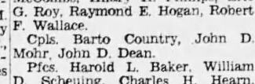
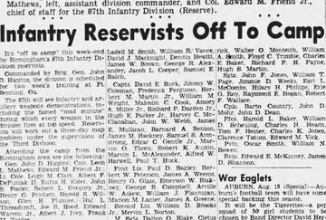
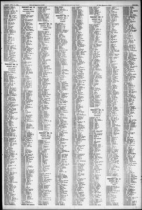
Birmingham Post p33 - Country Barto1950-04-11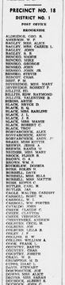
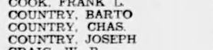
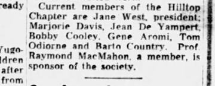
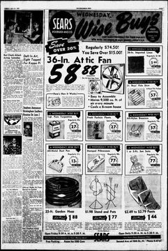
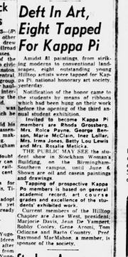


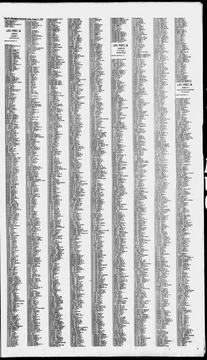
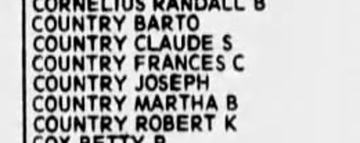
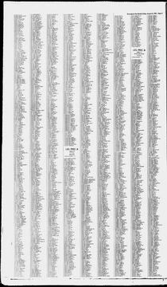
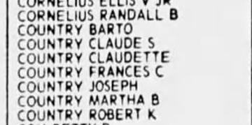
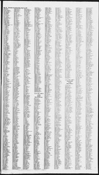
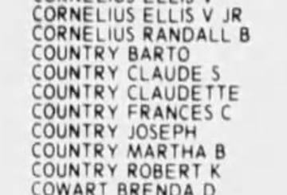
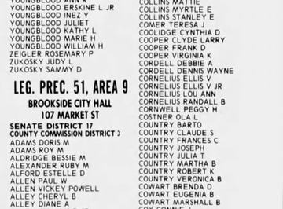
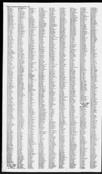
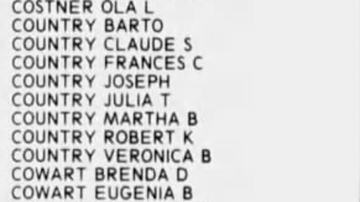
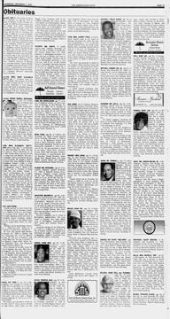
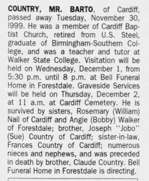
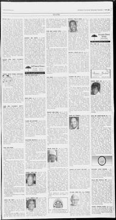
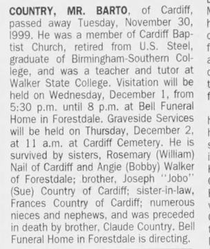
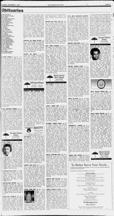
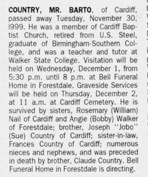
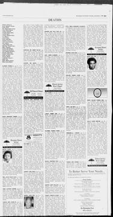
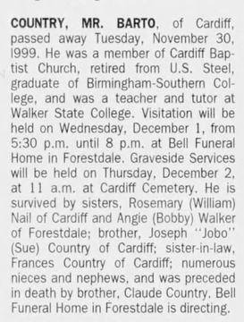


The years around this life
How to read the turnings, and where they come from
Two American authors, William Strauss and Neil Howe, proposed that American history moves in cycles of about 80 to 85 years. Each cycle has four "turnings" of about 21 years, and people born in the same stretch form a "generation" with one of four archetypes. The idea is in their books Generations (1991) and The Fourth Turning (1997).
- High. Institutions are strong and individualism is weak.
- Awakening. Institutions are attacked and individualism rises.
- Unraveling. Institutions are weak and distrusted, and individualism is strong.
- Crisis. Institutions are rebuilt and individualism declines.
- Prophet. Born in a High, comes of age in an Awakening.
- Nomad. Born in an Awakening, comes of age in an Unraveling.
- Hero. Born in an Unraveling, comes of age in a Crisis.
- Artist. Born in a Crisis, comes of age in a High.
What it is not. It is a theory, not a record and not a measurement. Many historians do not accept it as science. Critics say it is too vague to be proven wrong, and that it fits a pattern onto events after the fact. It was built on American history from 1584, with an Anglo-American focus. The authors say similar cycles show up in other developed countries; I have not checked that, and it may not fit histories outside the West. The turning dates and the generation names on these pages are theirs. They say nothing about any one person in the family, and nothing on this page claims a person had a trait because of the year they were born.
Why it is here. Grouping the years helps me see a life next to its time. The names are theirs, and I like them.
Read more: the books, at Open Library (the primary source) · Strauss–Howe generational theory, on Wikipedia, which also lists the criticism with its sources.
Unraveling, 1908 to 1929
In their own records
- Nothing dated in these years on this sheet.
History in these years (period context, not about this person)
- 1928 Alabama ends convict leasing, the last state to do so; Sloss had worked county prisoners in its mines until then alabama; Encyclopedia of Alabama, Convict Lease System
Depression and World War II Crisis, 1929 to 1946
In their own records
- 1940-04-01 1940 census (census day 1 April) 1940 census, Election Precinct 18 (index text)Documented (index)
History in these years (period context, not about this person)
- 1929-10-29 Black Tuesday: the Wall Street crash national; Wikipedia, Wall Street crash of 1929
- 1932-06 A quarter of Birmingham's wage workers jobless (25,000 of 100,000) local; Encyclopedia of Alabama, Great Depression in Alabama
- 1933-05-18 Tennessee Valley Authority created national; Wikipedia, Tennessee Valley Authority
- 1934 Roosevelt calls Birmingham the "worst hit town in the country" local; Encyclopedia of Alabama, Great Depression in Alabama
- 1935-08-14 Social Security Act signed (farm and domestic workers not covered at first) national; Wikipedia, Social Security Act
- 1936-05-20 Rural Electrification Act national; Wikipedia, Rural Electrification Act
- 1941-12-07 Pearl Harbor attacked; the U.S. declares war on Japan the next day national; Wikipedia, Attack on Pearl Harbor
- 1944-06-22 G.I. Bill signed national; Wikipedia, G.I. Bill
- 1945-09-02 Japan signs the surrender; World War II ends national; Wikipedia, Victory over Japan Day
Conjunctions and oppositions in these years (a clockface, not a cause)
- Saturn-Pluto opposition, exact 3 times: 1931-02-17 (19° Capricorn / 19° Cancer); 1931-07-08 (20° Capricorn / 20° Cancer); 1931-12-13 (21° Capricorn / 21° Cancer)
- Saturn-Neptune opposition, exact 3 times: 1936-03-21 (14° Pisces / 14° Virgo); 1936-10-04 (17° Pisces / 17° Virgo); 1937-01-18 (18° Pisces / 18° Virgo)
- ✦ Saturn-Uranus conjunction, exact once: 1942-05-03 (29° Taurus / 29° Taurus)within 1 year of: 1941-12-07 Pearl Harbor attacked; the U.S. declares war on Japan the next day. Dates side by side, not a cause.
American High, 1946 to 1964
In their own records
- 1949-08-19 "Cpls. Barto Country," 87th Infantry Division (Reserve), camp at Ft. Benning (19 Aug 1949) Birmingham Post 19 Aug 1949 p20, "Infantry Reservists Off To Camp"Documented (as printed)
- 1950-04-11 Name list: Barto, Chas. and Joseph, Precinct 18 (11 Apr 1950) Birmingham Post 11 Apr 1950 p33 (list title not on the page)Documented (as printed)
- 1950-05-23 Named a current member of the Hilltop Chapter of Kappa Pi, Birmingham-Southern (23 May 1950) Birmingham News 23 May 1950 p7, "Deft In Art, Eight Tapped For Kappa Pi"Strongly supported
- 1952-04-15 Name list: Barto, Chas. and Joseph, Precinct 18 (15 Apr 1952) Birmingham Post-Herald 15 Apr 1952 p45 (list title not on the page)Documented (as printed)
- 1954-04-13 Name list: Barto, Chas., Joseph and Martha B., Precinct 38 (13 Apr 1954) Birmingham Post-Herald 13 Apr 1954 p75 (list title not on the page)Documented (as printed)
History in these years (period context, not about this person)
- 1948-07-17 States' Rights Democratic ("Dixiecrat") convention in Birmingham local; Wikipedia, Dixiecrat
- 1954-05-17 Brown v. Board of Education decided national; Wikipedia, Brown v. Board of Education
- 1955-12-05 to 1956-12-20 Montgomery bus boycott alabama; Wikipedia, Montgomery bus boycott
- 1956-06-29 Federal-Aid Highway Act signed (the interstates) national; Wikipedia, Federal-Aid Highway Act of 1956
- 1963-04-03 to 1963-05-10 Birmingham campaign local; Wikipedia, Birmingham campaign
- 1963-09-15 16th Street Baptist Church bombing kills four girls local; Wikipedia, 16th Street Baptist Church bombing
Conjunctions and oppositions in these years (a clockface, not a cause)
- Saturn-Pluto conjunction, exact once: 1947-08-11 (13° Leo / 13° Leo)
- ✦ Saturn-Neptune conjunction, exact 3 times: 1952-11-21 (22° Libra / 22° Libra); 1953-05-17 (21° Libra / 21° Libra); 1953-07-22 (21° Libra / 21° Libra)within 1 year of: 1954-05-17 Brown v. Board of Education decided. Dates side by side, not a cause.
Consciousness Revolution Awakening, 1964 to 1984
In their own records
- 1966-04-11 Named "Bart Country" among his father's sons (11 Apr 1966) Birmingham News 11 Apr 1966 p28Plausible (name)
- 1978-08-11 Name list with Claude S, Frances C, Joseph, Martha B and Robert K (11 Aug 1978) Birmingham Post-Herald 11 Aug 1978 p93 (list title not on the page)Documented (as printed)
History in these years (period context, not about this person)
- 1965-03-07 Bloody Sunday at Selma; Voting Rights Act signed 6 Aug 1965 alabama; Wikipedia, Selma to Montgomery marches
- 1969-07-20 Apollo 11 lands on the Moon national; Wikipedia, Apollo 11
- 1979-11-13 Richard Arrington Jr. takes office, Birmingham's first African American mayor local; Wikipedia, Richard Arrington Jr.
Conjunctions and oppositions in these years (a clockface, not a cause)
- Saturn-Uranus opposition, exact 5 times: 1965-04-01 (11° Pisces / 11° Virgo); 1965-08-28 (14° Pisces / 14° Virgo); 1966-02-24 (18° Pisces / 18° Virgo); 1966-11-08 (23° Pisces / 23° Virgo); 1967-01-06 (24° Pisces / 24° Virgo)
- Saturn-Pluto opposition, exact 3 times: 1965-04-23 (13° Pisces / 13° Virgo); 1965-08-17 (15° Pisces / 15° Virgo); 1966-02-20 (17° Pisces / 17° Virgo)
- Uranus-Pluto conjunction, exact 3 times: 1965-10-09 (17° Virgo / 17° Virgo); 1966-04-04 (16° Virgo / 16° Virgo); 1966-06-30 (16° Virgo / 16° Virgo)
- Saturn-Neptune opposition, exact 3 times: 1971-06-25 (0° Gemini / 0° Sagittarius); 1971-11-27 (2° Gemini / 2° Sagittarius); 1972-04-19 (4° Gemini / 4° Sagittarius)
- Saturn-Pluto conjunction, exact once: 1982-11-08 (27° Libra / 27° Libra)
Unraveling, 1984 to 2008
In their own records
- 1990-05-11 Name list, Leg. Prec. 51, Area 9, Brookside City Hall (11 May 1990) Birmingham Post-Herald 11 May 1990 p122Documented (as printed)
- 1999-11-30 Dies (30 Nov 1999) Birmingham News 1 Dec 1999 p27Documented
- 1999-12-02 Visitation Wed 1 Dec 1999, 5:30 to 8 p.m., Bell Funeral Home, Forestdale; graveside Thu 2 Dec, 11 a.m., Cardiff Cemetery Birmingham News 1 and 2 Dec 1999; Post-Herald 1 and 2 Dec 1999 (four printings, same text)Documented (newspaper)
History in these years (period context, not about this person)
- 1989-11-09 The Berlin Wall falls national; Wikipedia, Fall of the Berlin Wall
Conjunctions and oppositions in these years (a clockface, not a cause)
- Saturn-Uranus conjunction, exact 3 times: 1988-02-13 (29° Sagittarius / 29° Sagittarius); 1988-06-26 (28° Sagittarius / 28° Sagittarius); 1988-10-18 (27° Sagittarius / 27° Sagittarius)
- ✦ Saturn-Neptune conjunction, exact 3 times: 1989-03-03 (11° Capricorn / 11° Capricorn); 1989-06-24 (11° Capricorn / 11° Capricorn); 1989-11-13 (10° Capricorn / 10° Capricorn)within 1 year of: 1989-11-09 The Berlin Wall falls. Dates side by side, not a cause.
- Uranus-Neptune conjunction, exact 3 times: 1993-02-02 (19° Capricorn / 19° Capricorn); 1993-08-20 (18° Capricorn / 18° Capricorn); 1993-10-24 (18° Capricorn / 18° Capricorn)
☌ conjunction, ☍ opposition (larger), □ square. Ticks under the transits are sign ingresses (dashed: retrograde back-entry). A gold ring on the bar is a birth, marriage or death within 1 year of a ☌ or ☍. A gold band is a ☌ or ☍ (all its exact passes) within 1 year of a history item. Dates side by side, not a cause. Astrology is shown as a clockface. Hover for detail; the list below has the same items. History dots: national, Alabama, local; black squares are events in our own records.
List view: 33 items (history, family records, and the conjunctions and oppositions only; ✦ marks a conjunction or opposition within 1 year of a history item)
| 1928 | Alabama ends convict leasing, the last state to do so; Sloss had worked county prisoners in its mines until then | alabama; Encyclopedia of Alabama, Convict Lease System |
| 1929-10-29 | Black Tuesday: the Wall Street crash | national; Wikipedia, Wall Street crash of 1929 |
| 1931-02-17 | Saturn-Pluto opposition, exact 3 times: 1931-02-17 (19° Capricorn / 19° Cancer); 1931-07-08 (20° Capricorn / 20° Cancer); 1931-12-13 (21° Capricorn / 21° Cancer) | computed (Swiss Ephemeris), transits CSV |
| 1932-06 | A quarter of Birmingham's wage workers jobless (25,000 of 100,000) | local; Encyclopedia of Alabama, Great Depression in Alabama |
| 1933-05-18 | Tennessee Valley Authority created | national; Wikipedia, Tennessee Valley Authority |
| 1934 | Roosevelt calls Birmingham the "worst hit town in the country" | local; Encyclopedia of Alabama, Great Depression in Alabama |
| 1935-08-14 | Social Security Act signed (farm and domestic workers not covered at first) | national; Wikipedia, Social Security Act |
| 1936-03-21 | Saturn-Neptune opposition, exact 3 times: 1936-03-21 (14° Pisces / 14° Virgo); 1936-10-04 (17° Pisces / 17° Virgo); 1937-01-18 (18° Pisces / 18° Virgo) | computed (Swiss Ephemeris), transits CSV |
| 1936-05-20 | Rural Electrification Act | national; Wikipedia, Rural Electrification Act |
| 1941-12-07 | Pearl Harbor attacked; the U.S. declares war on Japan the next day | national; Wikipedia, Attack on Pearl Harbor |
| 1942-05-03 | ✦ Saturn-Uranus conjunction, exact once: 1942-05-03 (29° Taurus / 29° Taurus) history within 1 year: 1941-12-07 Pearl Harbor attacked; the U.S. declares war on Japan the next day | computed (Swiss Ephemeris), transits CSV |
| 1944-06-22 | G.I. Bill signed | national; Wikipedia, G.I. Bill |
| 1945-09-02 | Japan signs the surrender; World War II ends | national; Wikipedia, Victory over Japan Day |
| 1947-08-11 | Saturn-Pluto conjunction, exact once: 1947-08-11 (13° Leo / 13° Leo) | computed (Swiss Ephemeris), transits CSV |
| 1948-07-17 | States' Rights Democratic ("Dixiecrat") convention in Birmingham | local; Wikipedia, Dixiecrat |
| 1952-11-21 | ✦ Saturn-Neptune conjunction, exact 3 times: 1952-11-21 (22° Libra / 22° Libra); 1953-05-17 (21° Libra / 21° Libra); 1953-07-22 (21° Libra / 21° Libra) history within 1 year: 1954-05-17 Brown v. Board of Education decided | computed (Swiss Ephemeris), transits CSV |
| 1954-05-17 | Brown v. Board of Education decided | national; Wikipedia, Brown v. Board of Education |
| 1955-12-05 to 1956-12-20 | Montgomery bus boycott | alabama; Wikipedia, Montgomery bus boycott |
| 1956-06-29 | Federal-Aid Highway Act signed (the interstates) | national; Wikipedia, Federal-Aid Highway Act of 1956 |
| 1963-04-03 to 1963-05-10 | Birmingham campaign | local; Wikipedia, Birmingham campaign |
| 1963-09-15 | 16th Street Baptist Church bombing kills four girls | local; Wikipedia, 16th Street Baptist Church bombing |
| 1965-03-07 | Bloody Sunday at Selma; Voting Rights Act signed 6 Aug 1965 | alabama; Wikipedia, Selma to Montgomery marches |
| 1965-04-01 | Saturn-Uranus opposition, exact 5 times: 1965-04-01 (11° Pisces / 11° Virgo); 1965-08-28 (14° Pisces / 14° Virgo); 1966-02-24 (18° Pisces / 18° Virgo); 1966-11-08 (23° Pisces / 23° Virgo); 1967-01-06 (24° Pisces / 24° Virgo) | computed (Swiss Ephemeris), transits CSV |
| 1965-04-23 | Saturn-Pluto opposition, exact 3 times: 1965-04-23 (13° Pisces / 13° Virgo); 1965-08-17 (15° Pisces / 15° Virgo); 1966-02-20 (17° Pisces / 17° Virgo) | computed (Swiss Ephemeris), transits CSV |
| 1965-10-09 | Uranus-Pluto conjunction, exact 3 times: 1965-10-09 (17° Virgo / 17° Virgo); 1966-04-04 (16° Virgo / 16° Virgo); 1966-06-30 (16° Virgo / 16° Virgo) | computed (Swiss Ephemeris), transits CSV |
| 1969-07-20 | Apollo 11 lands on the Moon | national; Wikipedia, Apollo 11 |
| 1971-06-25 | Saturn-Neptune opposition, exact 3 times: 1971-06-25 (0° Gemini / 0° Sagittarius); 1971-11-27 (2° Gemini / 2° Sagittarius); 1972-04-19 (4° Gemini / 4° Sagittarius) | computed (Swiss Ephemeris), transits CSV |
| 1979-11-13 | Richard Arrington Jr. takes office, Birmingham's first African American mayor | local; Wikipedia, Richard Arrington Jr. |
| 1982-11-08 | Saturn-Pluto conjunction, exact once: 1982-11-08 (27° Libra / 27° Libra) | computed (Swiss Ephemeris), transits CSV |
| 1988-02-13 | Saturn-Uranus conjunction, exact 3 times: 1988-02-13 (29° Sagittarius / 29° Sagittarius); 1988-06-26 (28° Sagittarius / 28° Sagittarius); 1988-10-18 (27° Sagittarius / 27° Sagittarius) | computed (Swiss Ephemeris), transits CSV |
| 1989-03-03 | ✦ Saturn-Neptune conjunction, exact 3 times: 1989-03-03 (11° Capricorn / 11° Capricorn); 1989-06-24 (11° Capricorn / 11° Capricorn); 1989-11-13 (10° Capricorn / 10° Capricorn) history within 1 year: 1989-11-09 The Berlin Wall falls | computed (Swiss Ephemeris), transits CSV |
| 1989-11-09 | The Berlin Wall falls | national; Wikipedia, Fall of the Berlin Wall |
| 1993-02-02 | Uranus-Neptune conjunction, exact 3 times: 1993-02-02 (19° Capricorn / 19° Capricorn); 1993-08-20 (18° Capricorn / 18° Capricorn); 1993-10-24 (18° Capricorn / 18° Capricorn) | computed (Swiss Ephemeris), transits CSV |
Period context, not about this person
General history of the time, from published sources. Nothing here says this person had or did it.
- Kappa Pi is described as an international collegiate art honor fraternity, founded in 1911 by students at the University of Kentucky. Wikipedia, Kappa Picontext
- The G.I. Bill of 22 Jun 1944 offered veterans tuition and living expenses for high school, college or vocational school. Wikipedia, G.I. Billcontext